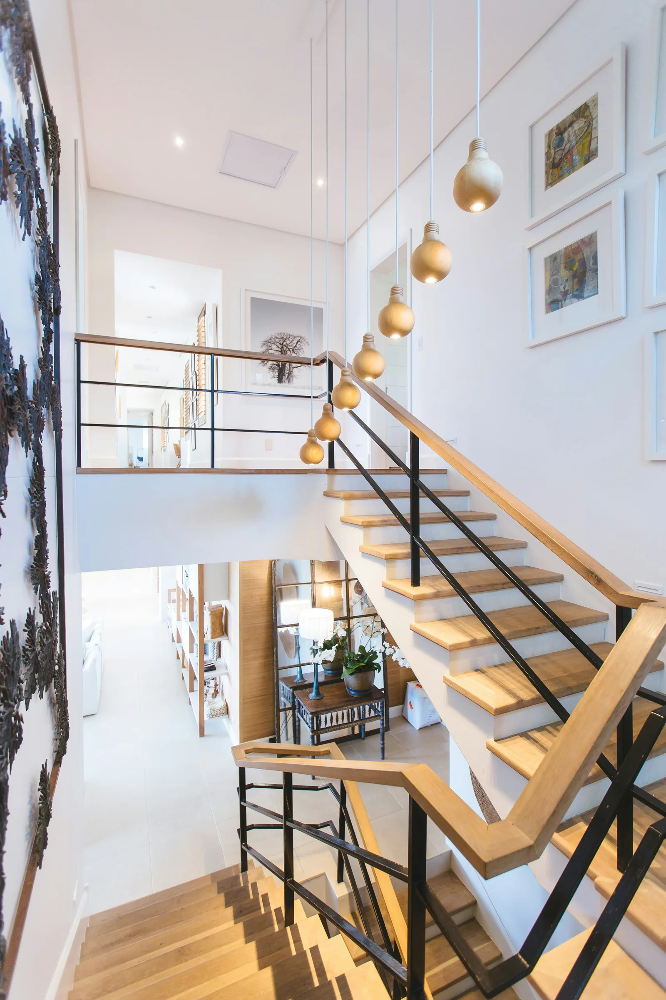
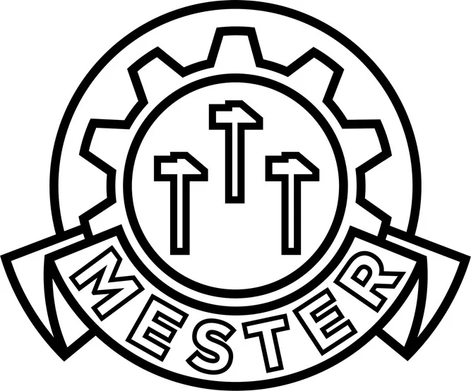
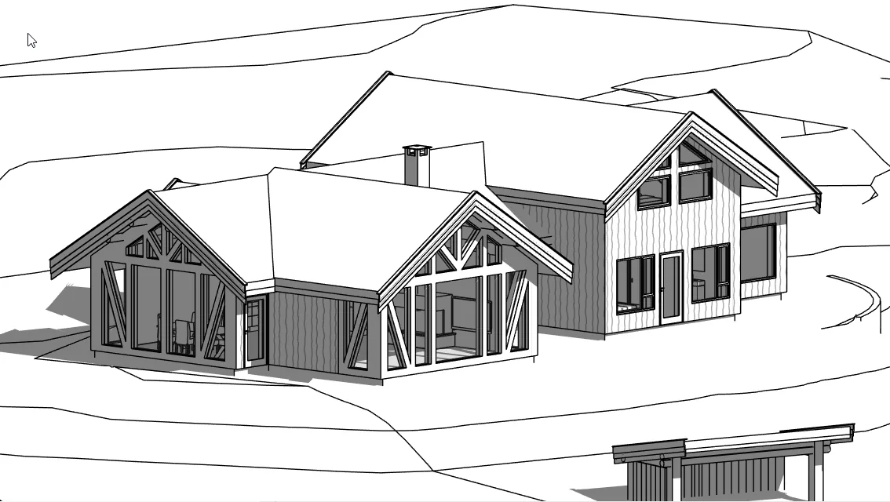

Rom for livet.
Blikk for helheten.
Arkitektur, byggesøknader og byggebistand.
Fra dine første tanker til en plan å bygge på.
God arkitektur.
Med begge beina
på byggeplassen.
Det skal ikke bare se riktig ut.
Det skal fungere i virkeligheten.
Med over 35 års erfaring fra boligbygging ser Larry Moore sammenhengen mellom form, funksjon og budsjett. Vi hjelper deg med å finne mulighetene – og veien videre.

Arkitektfag og byggmesterkompetanse.Samlet rundt ditt prosjekt.
Planer som
har fått form.
Utforsk alle fem prosjektene  Ferdig bygg · Fotografi
Ferdig bygg · FotografiFra underlag
til oppført bygg.
Ny lagerhall på Kjellerholen. Terreng, drenering og søknadsdokumentasjon – frem til godkjenning og bygging.
Utforsk prosjektet


Se det for deg.
Før du bygger.
En strek blir til et rom. En modell gjør mulighetene synlige. Utforsk hytta på Tretten som tegning og 3D-visualisering.
Se hele hytteprosjektet

Riktig hjelp.
Hele veien.
For deg som skal bygge hjemmet ditt.
Og for deg som bygger for andre.
byggesøknad
Fra de første skissene til 3D-modell, nabovarsel og et gjennomarbeidet søknadsgrunnlag.
Kalkulasjon &byggeledelse
Beskrivelser, budsjetter og oppfølging som gir bedre oversikt før og under byggingen.
EnergirådgivningByggtekniske vurderinger og bistand med søknad om støtte fra Enova.

Du møter Larry.
Og et helt
familieteam.
Hos Moore & Sons er veien kort fra spørsmål til fagkunnskap. Larry, Christopher og Alexander kombinerer arkitektur, tømrerfag og teknisk kompetanse.
Vi ser helheten, fra det du ønsker deg til hva prosjektet krever av løsninger, søknader og budsjett.
Bli kjent med ossSlik finner vi løsningen sammen.
Vi lytter
Du forteller om ønskene dine og hva du trenger hjelp til. Vi avklarer omfang, kostnadsramme og oppdrag.
Vi utforsker
Vi undersøker kart og lokale planer, utvikler et utkast og viser ideen i en 3D-modell du kan utforske.
Vi bearbeider
Vi går gjennom innspillene dine og justerer løsningen før tegningene ferdigstilles.
Vi dokumenterer
Vi lager underlaget som trengs til nabovarsel og byggesøknad. Modellen kan fortsatt utforskes på mobil og PC.
Et godt samarbeid
merkes underveis.
«En annen dimensjon til vår visualisering av prosjekter.»
«Virkelig gitt oss trygghet i rehabilitering av vårt hjem.»
«Vi vil definitivt velge dem igjen»
Utdrag fra kundeuttalelser publisert på Moore & Sons' originale nettsted.
Store planer?
Start med en samtale.
Den første samtalen er gratis og uforpliktende.
Fortell oss om ideen din, så tar vi det derfra.